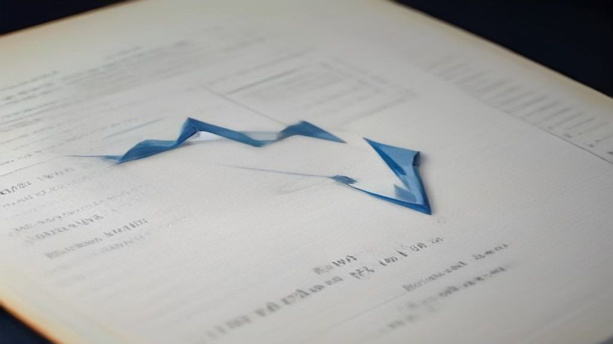

Market Wrap — 14 August 2026
TL;DR
- The Indian benchmark indices, Nifty 50 and Bank Nifty, ended the day marginally lower, extending their losing streak.
- Global yield concerns and sustained selling by Foreign Institutional Investors (FIIs) were key factors behind the subdued sentiment.
- LG Electronics India Ltd. (LGEINDIA) emerged as the top gainer among Nifty 500 stocks, surging over 9.5%.
- National Aluminium Co. Ltd. (NATIONALUM) was the biggest loser, dropping more than 6%.
- FIIs were net sellers for the second consecutive day, offloading shares worth ₹511 crore, while Domestic Institutional Investors (DIIs) provided strong support with net buying of ₹4,353 crore.
- Futures & Options (F&O) build-up data is unavailable for today's session.
How the market behaved today
The Indian equity market concluded the week on a negative note, with benchmark indices Nifty 50 and Bank Nifty posting marginal losses. The Nifty 50 closed below the 24,400 mark, while broader markets, including Midcap and Smallcap indices, significantly underperformed. The day saw a largely range-bound session after a flat open, eventually drifting lower towards the close.
| Index | Close | Change | High | Low |
|---|---|---|---|---|
| Nifty 50 | 24366.00 | -0.12% | 24405.20 | 24296.80 |
| Bank Nifty | 57491.10 | -0.25% | 57681.45 | 57380.45 |
| Nifty Midcap 100 | 63782.15 | -0.53% | 64139.05 | 63746.10 |
| Nifty Smallcap 100 | 19738.55 | -0.69% | 19913.40 | 19728.60 |
India VIX, the volatility index, eased slightly by 0.96% to 11.31, indicating a marginal reduction in market volatility.
What moved the market — the factors
The Indian market's subdued performance today was primarily influenced by global cues, particularly rising real yields across major economies, which raised fresh risks for stocks and global economic growth. This sentiment was exacerbated by continued selling pressure from Foreign Institutional Investors (FIIs), who were net sellers for the second consecutive session, pulling out ₹511 crore from the cash market. Domestic Institutional Investors (DIIs), however, provided significant counter-support with net buying of ₹4,353 crore.
Broader markets, including the Nifty Midcap 100 and Smallcap 100, underperformed the benchmarks, reflecting a cautious mood among investors. Sectorally, Pharma, Metal, and Auto indices saw notable declines, with specific stocks like National Aluminium and Natco Pharma experiencing significant drops. Natco Pharma's shares were particularly hit after the company reported a substantial 57% fall in its Q1 profit. Conversely, the Media sector showed resilience, ending as the top gainer.
Sectors — winners and losers
The market witnessed mixed sectoral performance today, with defensive sectors showing some strength while cyclicals faced headwinds.
Top 3 gainer sectors:
- MEDIA: +0.96% – This sector bucked the broader market trend, with Zee Entertainment Enterprises Ltd. (ZEEL) being a significant contributor to its positive performance.
- BANK: -0.25% – While ending in the red, the banking sector showed relative resilience compared to other major indices.
- IT: -0.31% – The IT sector also saw a marginal decline, performing better than the broader market.
Top 3 loser sectors:
- PHARMA: -0.90% – The pharmaceutical sector was among the worst performers, largely impacted by specific company results like Natco Pharma's Q1 profit decline.
- METAL: -0.71% – The metals sector faced selling pressure, with National Aluminium Co. Ltd. being a prominent loser.
- AUTO: -0.63% – The automobile sector also saw declines, reflecting broader market cautiousness.
Stocks that moved the market
Top 5 gainers (Nifty 500)
- LG Electronics India Ltd. (LGEINDIA, Consumer Durables): close ₹1729.70, +9.59%
- Elgi Equipments Ltd. (ELGIEQUIP, Capital Goods): close ₹609.50, +5.72%
- Zee Entertainment Enterprises Ltd. (ZEEL, Media Entertainment & Publication): close ₹102.28, +5.72% – The stock gained significantly, contributing to the Media sector's positive performance today.
- Cemindia Projects Ltd. (CEMPRO, Construction): close ₹1298.80, +5.00%
- Honasa Consumer Ltd. (HONASA, Fast Moving Consumer Goods): close ₹502.80, +4.87%
Top 5 losers (Nifty 500)
- National Aluminium Co. Ltd. (NATIONALUM, Metals & Mining): close ₹376.00, -6.12% – The stock was a major drag on the Metal sector today.
- Sammaan Capital Ltd. (SAMMAANCAP, Financial Services): close ₹152.39, -5.83%
- Olectra Greentech Ltd. (OLECTRA, Automobile and Auto Components): close ₹1316.90, -5.50% – This stock contributed to the weakness seen in the Automobile sector.
- NATCO Pharma Ltd. (NATCOPHARM, Healthcare): close ₹903.15, -5.10% – Shares plunged after the company reported a 57% fall in its Q1 profit to ₹206.5 crore.
- Aditya Infotech Ltd. (CPPLUS, Capital Goods): close ₹3519.00, -5.00%
News that moved stocks
- Natco Pharma Q1 profit falls 57 pc to Rs 206.5 cr
- Adani Energy Solution shares end 2% higher after acquiring Vizag Power Transmission
- Bharat Dynamics Q1 results: Profit sees sixfold increase, revenue surges 131% YoY
- Rupee logs weekly decline, with RBI intervention curbing losses
- MCX launches crude sunflower oil futures contract
- Global Market: Rising real yields raise fresh risks for stocks and global economic growth
Natco Pharma reported a significant decline in its first-quarter profit, primarily due to reduced sales of its key cancer drug, lenalidomide, leading to a sharp drop in consolidated revenues. This news directly impacted NATCOPHARM shares, which were among the top losers today.
Adani Energy Solutions saw its shares gain 2% following the company's acquisition of Vizag Power Transmission from REC Power Development and Consultancy. The acquisition is intended to facilitate power integration for projects in Andhra Pradesh.
Bharat Dynamics announced robust Q1 results, with its profit increasing sixfold and revenue surging by 131% year-on-year.
The Indian rupee depreciated against the US dollar over the week, pressured by escalating tensions from the Middle East conflict. However, interventions by the central bank and consistent dollar sales by state-run banks helped to mitigate further losses.
The Multi Commodity Exchange (MCX) has introduced futures contracts for crude sunflower oil. This initiative aims to provide market participants with a tool to manage price volatility and exposure to global supply-demand dynamics, especially given India's substantial imports of nearly 2.8 million tonnes of crude sunflower oil.
Real borrowing costs have climbed to multi-year highs across major economies, driven by increased bond supply from heavy government borrowing and large technology companies' AI spending. This rise in real yields poses fresh risks for stock markets and global economic growth.
F&O build-up — where traders are positioning
OI build-up needs the previous session's OI — it will populate from the next run. Data for today's F&O build-up is unavailable.
Market breadth
The market breadth was decidedly negative today, indicating that declines outnumbered advances significantly. Out of 497 stocks traded on the NSE, 162 advanced while a larger 335 declined, suggesting a broad-based weakness across the market.
FII / DII flows
Foreign Institutional Investors (FIIs) continued their selling spree for the second consecutive session, while Domestic Institutional Investors (DIIs) remained strong buyers, providing crucial support to the market.
| Investor Type | Net Flow (₹ crore) |
|---|---|
| FII | -511 |
| DII | 4,353 |
Over the last five trading sessions, FIIs have been net sellers for two days, offloading a total of ₹1,513 crore. In contrast, DIIs have been consistent net buyers, injecting a substantial ₹9,166 crore into the market over the same period. This trend suggests that domestic investors are actively cushioning the impact of foreign outflows.
Event breakdown — what happened today and how it hit the market
Today's session was primarily driven by a combination of global cues and specific corporate earnings. The overarching theme was the concern over rising real yields in global markets, which dampened investor sentiment and led to cautious trading. This global factor, coupled with persistent selling by FIIs, put pressure on the Indian benchmarks.
On the corporate front, Natco Pharma's shares reacted sharply to its Q1 results, which showed a significant profit decline, contributing to the weakness in the Pharma sector. Conversely, Adani Energy Solutions saw a positive reaction to its acquisition news, and Bharat Dynamics reported strong Q1 earnings, though its impact on the broader market was limited. The rupee's weekly decline amidst Middle East tensions and RBI intervention also remained a point of focus, reflecting broader macroeconomic concerns.
Setup for tomorrow
As we head into tomorrow, global cues will continue to be a significant determinant for market direction. Investors will closely watch the movement of the US 10-year yield, which closed at 4.64% today, and crude oil prices, with Brent crude at $87.13 and WTI crude at $81.60. The Dollar Index eased slightly to 99.66, while the USD/INR pair closed at 95.42. Any further developments in global real yields or geopolitical tensions could influence FII flows. Domestically, the resilience of DII buying will be crucial in counteracting any foreign outflows. Key levels for Nifty 50 and Bank Nifty will be closely watched for potential reversals or continuations of the current trend.
Sources
- MCX launches crude sunflower oil futures contract.
- Adani Energy Solution shares end 2% higher after acquiring Vizag Power Transmission.
- Rupee logs weekly decline, with RBI intervention curbing losses.
- Sensex falls 71 points, Nifty closes below 24,400; broader markets underperform. What lies ahead?.
- Global Market: Rising real yields raise fresh risks for stocks and global economic growth.
- Global Market | Bank of Japan could raise rates in September, eye faster hikes: Reports.
- Global Market: European shares steady near record highs as Iran war, Eurozone data in focus.
- Bharat Dynamics Q1 results: Profit sees sixfold increase, revenue surges 131% YoY.
- Top Gainers & Losers on 14 August: NALCO, HPCL, Tata Motors PV, Netweb Tech, Hindustan Copper among top losers.
- Small-cap retail stock jumps 4% from today's low. Details here.
- Natco Pharma Q1 profit falls 57 pc to Rs 206.5 cr.
- https://economictimes.indiatimes.com/markets/ipos/fpos/quest-global-said-to-pick-banks-for-1-billion-india-ipo/articleshow/133237705.cms
- https://economictimes.indiatimes.com/markets/cryptocurrency/crypto-news/bitcoin-hovers-near-63000-despite-softer-us-inflation-as-weak-liquidity-weighs-on-crypto/articleshow/133236737.cms
- https://economictimes.indiatimes.com/markets/cryptocurrency/crypto-news/crypto-exchanges-are-evolving-into-financial-superapps-traditional-assets-emerge-as-key-growth-engine-binance/articleshow/133236327.cms
- https://economictimes.indiatimes.com/markets/us-stocks/wall-street-guide/quote-of-the-day-by-robert-wilson-most-of-the-people-who-are-successful-in-the-market-are-basically-optimists-and-most-of-these-people-are-very-uncomfortable-when-they-are-on-the-short-side/articleshow/133239519.cms
- NSE India: https://www.nseindia.com/